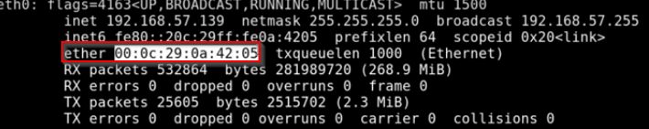

MAC address is also called a physical address
MAC stands for media access control
always identified as ether:

MAC address is the way that we are communicating using switches,
this is how they know what device is what,
every device needs nic, which is network interface card, and you need MAC address for nic,
first three pairs are identifiers, they can identify what device you are using